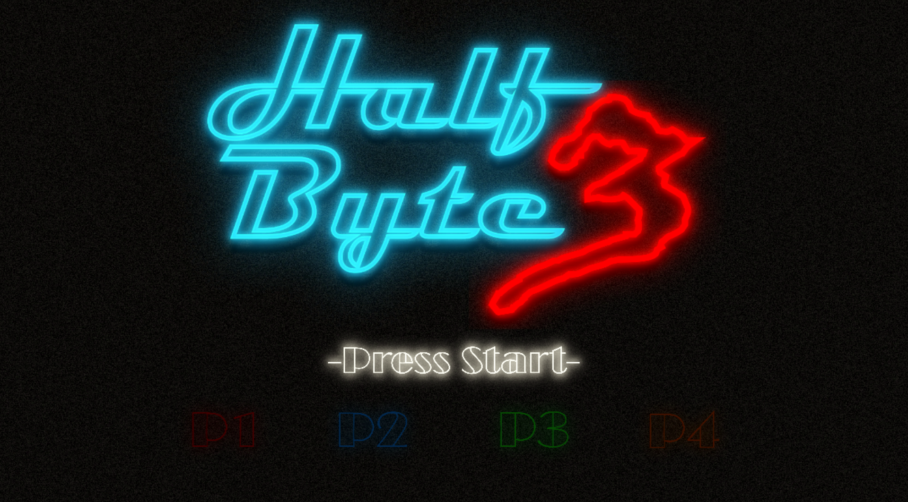
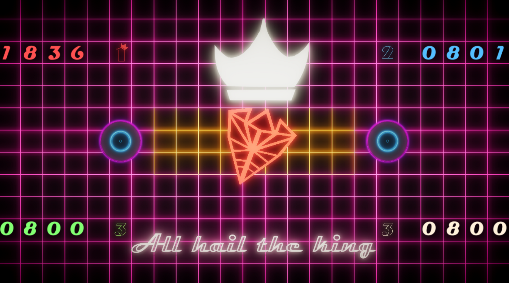
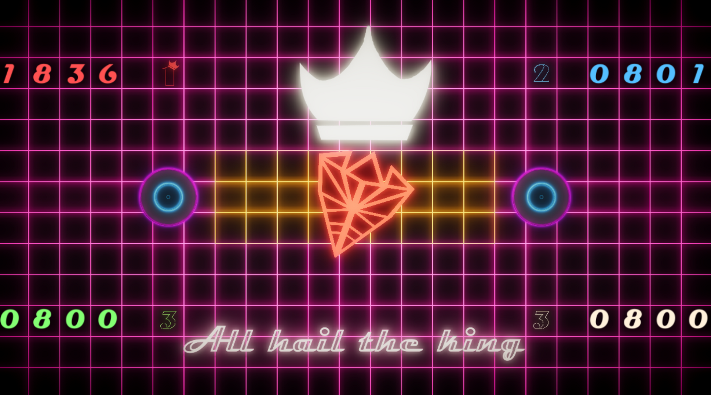

Half-Byte 3 the long awaited sequel by.. No wait! This is the wrong one. Ah yes we really did make a joke about Half Life, but only because we couldn't think of a name and we needed one. So as you can tell there obviously is no Half-Byte and also no Half-Byte 2. It's just Half-Byte 3.
But what is Half-Byte 3? It is a game created for the TUM Semester Gamejam in the winter of 2017. The topic of the jam was "Attraction", which we interpreted as gravity. We built 4 little spaceships which were only controlled by rotating and shooting. Shooting gave your ship a small kickback which meant that you had to fire away from the thing you wanted to go towards. If you are shot by another player you are propelled in the direction of the bullet. It is a 4 player game and you had to stay in the golden/yellow field in the center of the screen for the longest time to win. The blue circles represent wormholes, which suck you in and kill you. If you get sucked into one of them a certain amount of time is subtracted from your score. With 4 Players all shooting around uncontrollably to move into the center you can imagine the mayhem of Half-Byte 3.
It was a lot of fun to work on this project, especially since the visuals are meant to be in the 80s Neon style, which I just love. The soundtrack also represented that quite well, which made us blast it into the room while everybody tested the games. In the end it won 5. place out of around 25 games.
 
